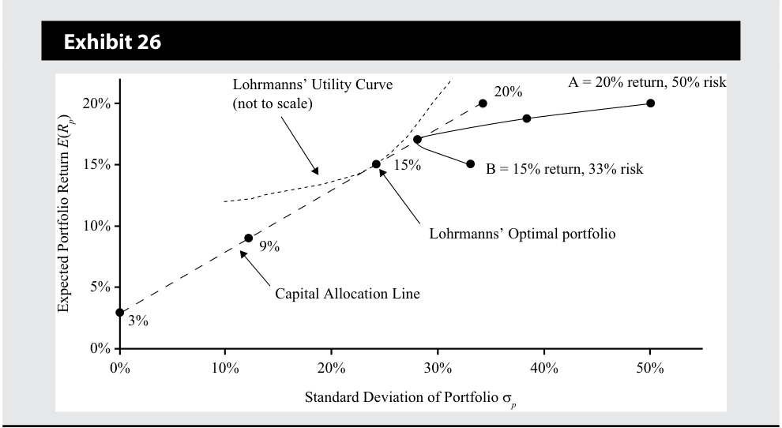
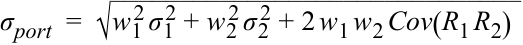
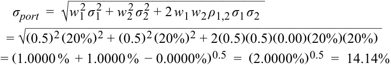
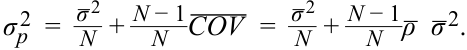

Learning Module 1 Portfolio Risk and Return: Part I - Part 4: Summary
Volume 9: Portfolio Management
Learning Module 1 Portfolio Risk and Return: Part I
Part 4/4: Summary (PDF Pages 57–70)
Tập 9: Quản lý Danh mục Đầu tư (Portfolio Management)
Học phần 1: Rủi ro và Lợi nhuận Danh mục Đầu tư: Phần I (Portfolio Risk and Return: Part I)
Phần 4/4: Tóm tắt & Bài tập Thực hành (Summary & Practice Problems) (Trang PDF 57–70)
the highest utility: 0.0774. Finally, Exhibit 26 shows the indifference curve that is tangent to the capital allocation line to generate Lohrmanns’ optimal investor portfolio.
độ hữu dụng cao nhất: $0,0774$. Cuối cùng, Bảng minh họa 26 thể hiện đường bàng quan tiếp xúc với đường phân bổ vốn để tạo ra danh mục đầu tư tối ưu của nhà đầu tư cho gia đình Lohrmann.

Chú thích hình ảnh: Bảng minh họa 26: Đường cong hữu dụng của gia đình Lohrmann (Lohrmanns’ Utility Curve, không vẽ theo đúng tỷ lệ) tiếp xúc với Đường phân bổ vốn (Capital Allocation Line) tại mức lợi nhuận 15% – Danh mục đầu tư tối ưu của gia đình Lohrmann (Lohrmanns’ Optimal portfolio).
Investor Preferences and Optimal Portfolios
Sở thích của Nhà đầu tư và các Danh mục Đầu tư Tối ưu (Investor Preferences and Optimal Portfolios)
The location of an optimal investor portfolio depends on the investor’s risk preferences. A highly risk-averse investor may invest a large proportion, even 100 percent, of his/her assets in the risk-free asset. The optimal portfolio in this investor’s case will be located close to the y -axis. A less risk-averse investor, however, may invest a large portion of his/her wealth in the optimal risky asset. The optimal portfolio in this investor’s case will lie closer to Point P in Exhibit 22.
Vị trí của một danh mục đầu tư tối ưu của nhà đầu tư phụ thuộc vào sở thích rủi ro của nhà đầu tư đó. Một nhà đầu tư rất ngại rủi ro có thể đầu tư một tỷ trọng lớn, thậm chí 100%, tài sản của mình vào tài sản phi rủi ro. Danh mục đầu tư tối ưu trong trường hợp của nhà đầu tư này sẽ nằm gần trục tung (y-axis). Tuy nhiên, một nhà đầu tư ít ngại rủi ro hơn có thể đầu tư một phần lớn tài sản của mình vào tài sản rủi ro tối ưu. Danh mục đầu tư tối ưu trong trường hợp của nhà đầu tư này sẽ nằm gần Điểm P hơn trong Bảng minh họa 22.
Some less risk-averse investors (i.e., with a high risk tolerance) may wish to accept even more risk because of the chance of higher return. Such an investor may borrow money to invest more in the risky portfolio. If the investor borrows 25 percent of his wealth, he/she can invest 125 percent in the optimal risky portfolio. The optimal investor portfolio for such an investor will lie to the right of Point P on the capital allocation line.
Một số nhà đầu tư ít ngại rủi ro hơn (tức là có khả năng chịu đựng rủi ro cao) có thể muốn chấp nhận nhiều rủi ro hơn nữa vì cơ hội đạt được lợi nhuận cao hơn. Một nhà đầu tư như vậy có thể vay tiền để đầu tư nhiều hơn vào danh mục đầu tư rủi ro. Nếu nhà đầu tư vay thêm một khoản tương đương 25% tài sản của mình, người đó có thể đầu tư 125% vào danh mục đầu tư rủi ro tối ưu. Danh mục đầu tư tối ưu của nhà đầu tư đối với một nhà đầu tư như vậy sẽ nằm về phía bên phải của Điểm P trên đường phân bổ vốn.
Thus, moving from the risk-free asset along the capital allocation line, we encounter investors who are willing to accept more risk. At Point P, the investor is 100 percent invested in the optimal risky portfolio. Beyond Point P, the investor accepts even more risk by borrowing money and investing in the optimal risky portfolio.
Như vậy, khi di chuyển từ tài sản phi rủi ro dọc theo đường phân bổ vốn, chúng ta sẽ bắt gặp những nhà đầu tư sẵn sàng chấp nhận nhiều rủi ro hơn. Tại Điểm P, nhà đầu tư đầu tư 100% vào danh mục đầu tư rủi ro tối ưu. Vượt quá Điểm P, nhà đầu tư chấp nhận nhiều rủi ro hơn nữa bằng cách vay tiền và đầu tư vào danh mục đầu tư rủi ro tối ưu.
Note that we are able to accommodate all types of investors with just two portfolios: the risk-free asset and the optimal risky portfolio. Exhibit 22 is also an illustration of the two-fund separation theorem. Portfolio P is the optimal risky portfolio that is selected without regard to investor preferences. The optimal investor portfolio is selected on the capital allocation line by overlaying the indifference curves that incorporate investor preferences.
Lưu ý rằng chúng ta có thể đáp ứng nhu cầu của tất cả các kiểu nhà đầu tư chỉ với hai danh mục đầu tư: tài sản phi rủi ro và danh mục đầu tư rủi ro tối ưu. Bảng minh họa 22 cũng là một minh họa cho định lý phân tách hai quỹ (two-fund separation theorem). Danh mục P là danh mục đầu tư rủi ro tối ưu được lựa chọn mà không cần xét đến sở thích của nhà đầu tư. Danh mục đầu tư tối ưu của nhà đầu tư được lựa chọn trên đường phân bổ vốn bằng cách chồng các đường bàng quan có tích hợp sở thích của nhà đầu tư lên đó.
~~SUMMARY~~
TÓM TẮT (SUMMARY)
This reading provides a description and computation of investment characteristics, such as risk and return, that investors use in evaluating assets for investment. This was followed by sections about portfolio construction, selection of an optimal risky portfolio, and an understanding of risk aversion and indifference curves. Finally,
Bài đọc này cung cấp mô tả và cách tính toán các đặc điểm đầu tư, chẳng hạn như rủi ro và lợi nhuận, mà các nhà đầu tư sử dụng khi đánh giá các tài sản để đầu tư. Tiếp theo đó là các phần nói về việc xây dựng danh mục đầu tư, lựa chọn một danh mục đầu tư rủi ro tối ưu, và sự thấu hiểu về mức độ ngại rủi ro cũng như các đường bàng quan. Cuối cùng,
the tangency point of the indifference curves with the capital allocation line allows identification of the optimal investor portfolio. Key concepts covered in the reading include the following:
tiếp điểm (tangency point) của các đường bàng quan với đường phân bổ vốn cho phép xác định danh mục đầu tư tối ưu của nhà đầu tư. Các khái niệm trọng tâm được trình bày trong bài đọc bao gồm:
-
Holding period return is most appropriate for a single, predefined holding period.
-
Multiperiod returns can be aggregated in many ways. Each return computation has special applications for evaluating investments.
-
Risk-averse investors make investment decisions based on the risk–return trade-off, maximizing return for the same risk, and minimizing risk for the same return. They may be concerned, however, by deviations from a normal return distribution and from assumptions of financial markets’ operational efficiency.
-
Investors are risk averse, and historical data confirm that financial markets price assets for risk-averse investors.
-
The risk of a two-asset portfolio is dependent on the proportions of each asset, their standard deviations and the correlation (or covariance) between the assets’ returns. As the number of assets in a portfolio increases, the correlation among asset risks becomes a more important determinant of portfolio risk.
-
Combining assets with low correlations reduces portfolio risk.
-
The two-fund separation theorem allows us to separate decision making into two steps. In the first step, the optimal risky portfolio and the capital allocation line are identified, which are the same for all investors. In the second step, investor risk preferences enable us to find a unique optimal investor portfolio for each investor.
-
The addition of a risk-free asset creates portfolios that are dominant to portfolios of risky assets in all cases except for the optimal risky portfolio.
-
Tỷ suất sinh lợi thời kỳ nắm giữ (holding period return) là phù hợp nhất cho một thời kỳ nắm giữ đơn lẻ, được xác định trước.
-
Tỷ suất sinh lợi nhiều kỳ (multiperiod returns) có thể được tổng hợp theo nhiều cách. Mỗi phép tính lợi nhuận có những ứng dụng đặc thù để đánh giá các khoản đầu tư.
-
Các nhà đầu tư ngại rủi ro (risk-averse investors) đưa ra các quyết định đầu tư dựa trên sự đánh đổi giữa rủi ro và lợi nhuận (risk–return trade-off), tối đa hóa lợi nhuận cho cùng một mức rủi ro, và tối thiểu hóa rủi ro cho cùng một mức lợi nhuận. Tuy nhiên, họ có thể quan ngại trước những sự sai lệch khỏi phân phối tỷ suất sinh lợi chuẩn (normal return distribution) và khỏi các giả định về tính hiệu quả vận hành (operational efficiency) của thị trường tài chính.
-
Các nhà đầu tư là những người ngại rủi ro, và dữ liệu lịch sử xác nhận rằng các thị trường tài chính định giá tài sản dành cho những nhà đầu tư ngại rủi ro.
-
Rủi ro của một danh mục đầu tư gồm hai tài sản phụ thuộc vào tỷ trọng của mỗi tài sản, độ lệch chuẩn của chúng và hệ số tương quan (hoặc hiệp phương sai) giữa tỷ suất sinh lợi của các tài sản. Khi số lượng tài sản trong một danh mục đầu tư tăng lên, hệ số tương quan giữa rủi ro của các tài sản trở thành một yếu tố quyết định quan trọng hơn đối với rủi ro của danh mục đầu tư.
-
Việc kết hợp các tài sản có hệ số tương quan thấp giúp làm giảm rủi ro của danh mục đầu tư.
-
Định lý phân tách hai quỹ (two-fund separation theorem) cho phép chúng ta tách biệt việc ra quyết định thành hai bước. Trong bước đầu tiên, danh mục đầu tư rủi ro tối ưu và đường phân bổ vốn được xác định, vốn giống nhau đối với tất cả các nhà đầu tư. Trong bước thứ hai, sở thích rủi ro của nhà đầu tư cho phép chúng ta tìm ra một danh mục đầu tư tối ưu duy nhất cho từng nhà đầu tư.
-
Việc bổ sung thêm một tài sản phi rủi ro tạo ra các danh mục đầu tư chiếm ưu thế vượt trội (dominant) so với các danh mục đầu tư gồm các tài sản rủi ro trong mọi trường hợp ngoại trừ ngay tại danh mục đầu tư rủi ro tối ưu.
By successfully understanding the content of this reading, you should be comfortable calculating an investor’s optimal portfolio given the investor’s risk preferences and universe of investable assets available.
Bằng việc nắm vững nội dung của bài đọc này, bạn sẽ có thể tự tin tính toán danh mục đầu tư tối ưu của một nhà đầu tư khi biết sở thích rủi ro của nhà đầu tư đó và tập hợp các tài sản có thể đầu tư hiện có.
~~REFERENCES~~
TÀI LIỆU THAM KHẢO (REFERENCES)
2009 Ibbotson Stocks, Bonds, Bills, and Inflation (SBBI) Classic Yearbook . 2009. Chicago, IL: Morningstar.
2009 Ibbotson Stocks, Bonds, Bills, and Inflation (SBBI) Classic Yearbook. 2009. Chicago, IL: Morningstar.
Bogle, John C. 2008. “Black Monday and Black Swans.” Financial Analysts Journal 64, vol. , no. 2: 30–40. 10.2469/faj.v64.n2.9
Bogle, John C. 2008. “Black Monday and Black Swans.” Financial Analysts Journal 64, vol. , no. 2: 30–40. 10.2469/faj.v64.n2.9
Dimson, Elroy, Paul Marsh, and Mike Staunton. 2009. Credit Suisse Global Investment Returns Sourcebook . 2009. Zurich, Switzerland: Credit Suisse Research Institute.
Dimson, Elroy, Paul Marsh, and Mike Staunton. 2009. Credit Suisse Global Investment Returns Sourcebook. 2009. Zurich, Switzerland: Credit Suisse Research Institute.
Taleb, Nassim N. 2007. The Black Swan: The Impact of the Highly Improbable . New York: Random House Inc.
Taleb, Nassim N. 2007. The Black Swan: The Impact of the Highly Improbable. New York: Random House Inc.
~~PRACTICE PROBLEMS~~
BÀI TẬP THỰC HÀNH (PRACTICE PROBLEMS)
1. With respect to trading costs, liquidity is least likely to impact the:
1. Liên quan đến chi phí giao dịch, tính thanh khoản (liquidity) ít có khả năng tác động nhất đến:
-
A. stock price.
-
B. bid–ask spreads.
-
C. brokerage commissions.
-
A. giá cổ phiếu (stock price).
-
B. chênh lệch giá mua – bán (bid–ask spreads).
-
C. hoa hồng môi giới (brokerage commissions).
2. Evidence of risk aversion is best illustrated by a risk–return relationship that is:
2. Bằng chứng về sự ngại rủi ro (risk aversion) được minh họa tốt nhất bởi một mối quan hệ rủi ro – lợi nhuận mang tính chất:
-
A. negative.
-
B. neutral.
-
C. positive.
-
A. ngược chiều (negative).
-
B. trung lập (neutral).
-
C. cùng chiều (positive).
3. With respect to risk-averse investors, a risk-free asset will generate a numerical utility that is:
-
A. the same for all individuals.
-
B. positive for risk-averse investors.
-
C. equal to zero for risk seeking investors.
3. Đối với các nhà đầu tư ngại rủi ro, một tài sản phi rủi ro (risk-free asset) sẽ tạo ra một giá trị độ hữu dụng bằng số (numerical utility):
4. With respect to utility theory, the most risk-averse investor will have an indifference curve with the:
-
A. giống nhau đối với tất cả các cá nhân.
-
B. dương đối với các nhà đầu tư ngại rủi ro.
-
C. bằng không đối với các nhà đầu tư tìm kiếm rủi ro.
-
A. most convexity.
-
B. smallest intercept value.
-
C. greatest slope coefficient.
4. Theo lý thuyết hữu dụng (utility theory), nhà đầu tư ngại rủi ro nhất sẽ có một đường bàng quan (indifference curve) với:
5. With respect to an investor’s utility function expressed as: U = E ( r) − 21_Aσ_2 , which of the following values for the measure for risk aversion has the _least amount of risk aversion?
-
A. độ lồi lớn nhất (most convexity).
-
B. giá trị tung độ gốc nhỏ nhất (smallest intercept value).
-
C. hệ số góc lớn nhất (greatest slope coefficient).
-
A. −4.
-
B. 0.
5. Đối với hàm hữu dụng của một nhà đầu tư được biểu diễn là: $U = E(r) - \frac{1}{2} A \sigma^2$, giá trị nào sau đây của thước đo mức độ ngại rủi ro thể hiện mức độ ngại rủi ro ít nhất?
C. 4.
-
A. −4.
-
B. 0.
-
C. 4.
The following information relates to questions 6-7
Thông tin sau đây liên quan đến các câu hỏi 6–7
A financial planner has created the following data to illustrate the application of utility theory to portfolio selection:
Một nhà hoạch định tài chính đã tạo lập dữ liệu sau đây để minh họa việc ứng dụng lý thuyết hữu dụng vào lựa chọn danh mục đầu tư:
| Investment | Expected Return (%) |
Expected Standard Deviation (%) |
|---|---|---|
| 1 | 18 | 2 |
| 2 | 19 | 8 |
| 3 | 20 | 15 |
| 4 | 18 | 30 |
| Khoản đầu tư (Investment) | Lợi nhuận kỳ vọng (Expected Return) (%) | Độ lệch chuẩn kỳ vọng (Expected Standard Deviation) (%) |
|---|---|---|
| 1 | 18 | 2 |
| 2 | 19 | 8 |
| 3 | 20 | 15 |
| 4 | 18 | 30 |
6. A risk-neutral investor is most likely to choose:
6. Một nhà đầu tư trung lập với rủi ro (risk-neutral investor) có nhiều khả năng nhất sẽ chọn:
-
A. Investment 1.
-
B. Investment 2.
-
C. Investment 3.
-
A. Khoản đầu tư 1.
-
B. Khoản đầu tư 2.
-
C. Khoản đầu tư 3.
7. If an investor’s utility function is expressed as U = E ( r) −1 2_Aσ_2 and the measure for risk aversion has a value of −2, the risk-seeking investor is _most likely to choose:
7. Nếu hàm hữu dụng của một nhà đầu tư được biểu diễn là $U = E(r) - \frac{1}{2} A \sigma^2$ và thước đo mức độ ngại rủi ro có giá trị là −2, thì nhà đầu tư tìm kiếm rủi ro (risk-seeking investor) có nhiều khả năng nhất sẽ chọn:
-
A. Investment 2.
-
B. Investment 3.
-
C. Investment 4.
-
A. Khoản đầu tư 2.
-
B. Khoản đầu tư 3.
-
C. Khoản đầu tư 4.
8. If an investor’s utility function is expressed as U = E ( r ) −1 2_Aσ_2 and the measure for risk aversion has a value of 2, the risk-averse investor is _most likely to choose:
8. Nếu hàm hữu dụng của một nhà đầu tư được biểu diễn là $U = E(r) - \frac{1}{2} A \sigma^2$ và thước đo mức độ ngại rủi ro có giá trị là 2, thì nhà đầu tư ngại rủi ro có nhiều khả năng nhất sẽ chọn:
-
A. Investment 1.
-
B. Investment 2.
-
C. Investment 3.
-
A. Khoản đầu tư 1.
-
B. Khoản đầu tư 2.
-
C. Khoản đầu tư 3.
9. If an investor’s utility function is expressed as U = E ( r) −1 2_Aσ_2 and the measure for risk aversion has a value of 4, the risk-averse investor is _most likely to choose:
9. Nếu hàm hữu dụng của một nhà đầu tư được biểu diễn là $U = E(r) - \frac{1}{2} A \sigma^2$ và thước đo mức độ ngại rủi ro có giá trị là 4, thì nhà đầu tư ngại rủi ro có nhiều khả năng nhất sẽ chọn:
-
A. Investment 1.
-
B. Investment 2.
-
C. Investment 3.
-
A. Khoản đầu tư 1.
-
B. Khoản đầu tư 2.
-
C. Khoản đầu tư 3.
10. With respect to the mean–variance portfolio theory, the capital allocation line, CAL, is the combination of the risk-free asset and a portfolio of all:
10. Theo lý thuyết danh mục đầu tư trung bình – phương sai (mean–variance portfolio theory), đường phân bổ vốn (capital allocation line – CAL) là sự kết hợp giữa tài sản phi rủi ro và một danh mục đầu tư gồm tất cả:
-
A. risky assets.
-
B. equity securities.
-
C. feasible investments.
-
A. các tài sản rủi ro (risky assets).
-
B. các chứng khoán vốn cổ phần (equity securities).
-
C. các khoản đầu tư khả thi (feasible investments).
11. Two individual investors with different levels of risk aversion will have optimal portfolios that are:
11. Hai nhà đầu tư cá nhân có mức độ ngại rủi ro khác nhau sẽ có các danh mục đầu tư tối ưu nằm:
- A. below the capital allocation line.
- A. phía dưới đường phân bổ vốn.
-
B. on the capital allocation line.
-
C. above the capital allocation line.
-
B. trên đường phân bổ vốn.
-
C. phía trên đường phân bổ vốn.
12. With respect to capital market theory, which of the following asset characteristics is least likely to impact the variance of an investor’s equally weighted portfolio?
12. Theo lý thuyết thị trường vốn (capital market theory), đặc điểm tài sản nào sau đây ít có khả năng nhất tác động đến phương sai của một danh mục đầu tư có tỷ trọng đều (equally weighted portfolio) của nhà đầu tư?
-
A. Return on the asset.
-
B. Standard deviation of the asset.
-
C. Covariances of the asset with the other assets in the portfolio.
-
A. Tỷ suất sinh lợi của tài sản (Return on the asset).
-
B. Độ lệch chuẩn của tài sản (Standard deviation of the asset).
-
C. Hiệp phương sai của tài sản đó với các tài sản khác trong danh mục đầu tư (Covariances of the asset with the other assets in the portfolio).
13. A portfolio manager creates the following portfolio:
13. Một nhà quản lý danh mục đầu tư tạo lập danh mục đầu tư sau đây:
| Security | Security Weight (%) | Expected Standard Deviation (%) |
|---|---|---|
| 1 | 30 | 20 |
| 2 | 70 | 12 |
| Chứng khoán (Security) | Tỷ trọng chứng khoán (Security Weight) (%) | Độ lệch chuẩn kỳ vọng (Expected Standard Deviation) (%) |
|---|---|---|
| 1 | 30 | 20 |
| 2 | 70 | 12 |
If the correlation of returns between the two securities is 0.40, the expected standard deviation of the portfolio is closest to:
Nếu hệ số tương quan của tỷ suất sinh lợi giữa hai chứng khoán là 0,40, độ lệch chuẩn kỳ vọng của danh mục đầu tư gần nhất với:
A. 10.7%.
-
B. 11.3%.
-
C. 12.1%.
-
A. 10,7%.
-
B. 11,3%.
-
C. 12,1%.
14. A portfolio manager creates the following portfolio:
14. Một nhà quản lý danh mục đầu tư tạo lập danh mục đầu tư sau đây:
| Security | Security Weight (%) | Expected Standard Deviation (%) |
|---|---|---|
| 1 | 30 | 20 |
| 2 | 70 | 12 |
| Chứng khoán (Security) | Tỷ trọng chứng khoán (Security Weight) (%) | Độ lệch chuẩn kỳ vọng (Expected Standard Deviation) (%) |
|---|---|---|
| 1 | 30 | 20 |
| 2 | 70 | 12 |
If the covariance of returns between the two securities is −0.0240, the expected standard deviation of the portfolio is closest to:
A. 2.4%.
Nếu hiệp phương sai của tỷ suất sinh lợi giữa hai chứng khoán là −0,0240, độ lệch chuẩn kỳ vọng của danh mục đầu tư gần nhất với:
-
B. 7.5%.
-
C. 9.2%.
-
A. 2,4%.
-
B. 7,5%.
-
C. 9,2%.
The following information relates to questions 15-16
Thông tin sau đây liên quan đến các câu hỏi 15–16
A portfolio manager creates the following portfolio:
Một nhà quản lý danh mục đầu tư tạo lập danh mục đầu tư sau đây:
| Expected | ||
|---|---|---|
| Security | Security Weight (%) | Standard Deviation (%) |
| 1 | 30 | 20 |
| 2 | 70 | 12 |
| Chứng khoán (Security) | Tỷ trọng chứng khoán (Security Weight) (%) | Độ lệch chuẩn kỳ vọng (Expected Standard Deviation) (%) |
|---|---|---|
| 1 | 30 | 20 |
| 2 | 70 | 12 |
15. If the standard deviation of the portfolio is 14.40%, the correlation between the two securities is equal to:
A. -1.0.
15. Nếu độ lệch chuẩn của danh mục đầu tư là 14,40%, hệ số tương quan giữa hai chứng khoán bằng:
B. 0.0.
-
A. -1,0.
-
B. 0,0.
-
C. 1,0.
C. 1.0.
16. Nếu độ lệch chuẩn của danh mục đầu tư là 14,40%, hiệp phương sai giữa hai chứng khoán bằng:
16. If the standard deviation of the portfolio is 14.40%, the covariance between the two securities is equal to:
-
A. 0.0006.
-
B. 0.0240.
-
C. 1.0000.
-
A. 0,0006.
-
B. 0,0240.
-
C. 1,0000.
The following information relates to questions 17-19
Thông tin sau đây liên quan đến các câu hỏi 17–19
A portfolio manager creates the following portfolio:
Một nhà quản lý danh mục đầu tư tạo lập danh mục đầu tư sau đây:
| Security | Expected Annual Return (%) | Expected Standard Deviation (%) |
|---|---|---|
| 1 | 16 | 20 |
| 2 | 12 | 20 |
| Chứng khoán (Security) | Lợi nhuận hàng năm kỳ vọng (Expected Annual Return) (%) | Độ lệch chuẩn kỳ vọng (Expected Standard Deviation) (%) |
|---|---|---|
| 1 | 16 | 20 |
| 2 | 12 | 20 |
17. If the portfolio of the two securities has an expected return of 15%, the proportion invested in Security 1 is:
17. Nếu danh mục đầu tư gồm hai chứng khoán có tỷ suất sinh lợi kỳ vọng là 15%, tỷ trọng được đầu tư vào Chứng khoán 1 là:
-
A. 25%.
-
B. 50%.
-
C. 75%.
-
A. 25%.
-
B. 50%.
-
C. 75%.
18. If the correlation of returns between the two securities is −0.15, the expected standard deviation of an equal-weighted portfolio is closest to:
18. Nếu hệ số tương quan của tỷ suất sinh lợi giữa hai chứng khoán là −0,15, độ lệch chuẩn kỳ vọng của một danh mục đầu tư có tỷ trọng đều (equal-weighted portfolio) gần nhất với:
-
A. 13.04%.
-
B. 13.60%.
-
C. 13.87%.
-
A. 13,04%.
-
B. 13,60%.
-
C. 13,87%.
19. If the two securities are uncorrelated, the expected standard deviation of an
19. Nếu hai chứng khoán không tương quan (uncorrelated), độ lệch chuẩn kỳ vọng của một
equal-weighted portfolio is closest to:
danh mục đầu tư có tỷ trọng đều gần nhất với:
-
A. 14.00%.
-
B. 14.14%.
-
C. 20.00%.
-
A. 14,00%.
-
B. 14,14%.
-
C. 20,00%.
The following information relates to questions 20-21
Thông tin sau đây liên quan đến các câu hỏi 20–21
An analyst has made the following return projections for each of three possible outcomes with an equal likelihood of occurrence:
Một chuyên gia phân tích đã đưa ra các dự phóng tỷ suất sinh lợi sau đây cho từng kịch bản trong ba kịch bản có khả năng xảy ra ngang nhau:
| Outcome 1 | Outcome 2 | Outcome 3 | Expected Return | |
|---|---|---|---|---|
| Asset | (%) | (%) | (%) | (%) |
| 1 | 12 | 0 | 6 | 6 |
| 2 | 12 | 6 | 0 | 6 |
| 3 | 0 | 6 | 12 | 6 |
| Tài sản (Asset) | Kịch bản 1 (Outcome 1) (%) | Kịch bản 2 (Outcome 2) (%) | Kịch bản 3 (Outcome 3) (%) | Lợi nhuận kỳ vọng (Expected Return) (%) |
|---|---|---|---|---|
| 1 | 12 | 0 | 6 | 6 |
| 2 | 12 | 6 | 0 | 6 |
| 3 | 0 | 6 | 12 | 6 |
20. If the analyst constructs two-asset portfolios that are equally-weighted, which pair of assets has the lowest expected standard deviation?
20. Nếu chuyên gia phân tích xây dựng các danh mục đầu tư gồm hai tài sản có tỷ trọng bằng nhau, cặp tài sản nào có độ lệch chuẩn kỳ vọng thấp nhất?
-
A. Asset 1 and Asset 2.
-
B. Asset 1 and Asset 3.
-
C. Asset 2 and Asset 3.
-
A. Tài sản 1 và Tài sản 2.
-
B. Tài sản 1 và Tài sản 3.
-
C. Tài sản 2 và Tài sản 3.
21. If the analyst constructs two-asset portfolios that are equally weighted, which pair of assets provides the least amount of risk reduction?
21. Nếu chuyên gia phân tích xây dựng các danh mục đầu tư gồm hai tài sản có tỷ trọng bằng nhau, cặp tài sản nào mang lại mức giảm thiểu rủi ro ít nhất?
-
A. Asset 1 and Asset 2.
-
B. Asset 1 and Asset 3.
-
C. Asset 2 and Asset 3.
-
A. Tài sản 1 và Tài sản 2.
-
B. Tài sản 1 và Tài sản 3.
-
C. Tài sản 2 và Tài sản 3.
22. As the number of assets in an equally-weighted portfolio increases, the contribution of each individual asset’s variance to the volatility of the portfolio:
22. Khi số lượng tài sản trong một danh mục đầu tư có tỷ trọng đều tăng lên, mức đóng góp của phương sai từng tài sản riêng lẻ vào độ biến động của danh mục đầu tư sẽ:
-
A. increases.
-
B. decreases.
-
C. remains the same.
-
A. tăng lên.
-
B. giảm xuống.
-
C. giữ nguyên không đổi.
23. With respect to an equally weighted portfolio made up of a large number of assets, which of the following contributes the most to the volatility of the portfolio?
23. Đối với một danh mục đầu tư có tỷ trọng đều được tạo thành từ một số lượng lớn các tài sản, yếu tố nào sau đây đóng góp nhiều nhất vào độ biến động của danh mục đầu tư?
-
A. Average variance of the individual assets.
-
B. Standard deviation of the individual assets.
-
C. Average covariance between all pairs of assets.
-
A. Phương sai trung bình của các tài sản riêng lẻ.
-
B. Độ lệch chuẩn của các tài sản riêng lẻ.
-
C. Hiệp phương sai trung bình giữa tất cả các cặp tài sản.
24. The correlation between assets in a two-asset portfolio increases during a market decline. If there is no change in the proportion of each asset held in the portfolio or the expected standard deviation of the individual assets, the volatility of the portfolio is most likely to:
24. Hệ số tương quan giữa các tài sản trong một danh mục đầu tư gồm hai tài sản tăng lên trong một đợt suy giảm của thị trường. Nếu không có sự thay đổi nào về tỷ trọng của mỗi tài sản được nắm giữ trong danh mục hoặc độ lệch chuẩn kỳ vọng của các tài sản riêng lẻ, thì độ biến động của danh mục đầu tư có nhiều khả năng nhất sẽ:
-
A. increase.
-
B. decrease.
-
C. remain the same.
-
A. tăng lên.
-
B. giảm xuống.
-
C. giữ nguyên không đổi.
25. Which of the following statements is least accurate? The efficient frontier is the set of all attainable risky assets with the:
25. Phát biểu nào sau đây là kém chính xác nhất? Đường biên hiệu quả (efficient frontier) là tập hợp tất cả các tài sản rủi ro có thể đạt được với:
-
A. highest expected return for a given level of risk.
-
B. lowest amount of risk for a given level of return.
-
C. highest expected return relative to the risk-free rate.
-
A. tỷ suất sinh lợi kỳ vọng cao nhất cho một mức rủi ro nhất định.
-
B. lượng rủi ro thấp nhất cho một mức lợi nhuận nhất định.
-
C. tỷ suất sinh lợi kỳ vọng cao nhất so với lãi suất phi rủi ro.
26. The portfolio on the minimum-variance frontier with the lowest standard deviation is:
26. Danh mục đầu tư nằm trên đường biên phương sai tối thiểu (minimum-variance frontier) có độ lệch chuẩn thấp nhất là:
-
A. unattainable.
-
B. the optimal risky portfolio.
-
C. the global minimum-variance portfolio.
-
A. không thể đạt được (unattainable).
-
B. danh mục đầu tư rủi ro tối ưu (optimal risky portfolio).
-
C. danh mục đầu tư có phương sai tối thiểu toàn cục (global minimum-variance portfolio).
27. The set of portfolios on the minimum-variance frontier that dominates all sets of portfolios below the global minimum-variance portfolio is the:
27. Tập hợp các danh mục đầu tư nằm trên đường biên phương sai tối thiểu chiếm ưu thế vượt trội so với tất cả các tập hợp danh mục đầu tư nằm phía dưới danh mục đầu tư có phương sai tối thiểu toàn cục là:
-
A. capital allocation line.
-
B. Markowitz efficient frontier.
-
C. set of optimal risky portfolios.
-
A. đường phân bổ vốn (capital allocation line).
-
B. đường biên hiệu quả Markowitz (Markowitz efficient frontier).
-
C. tập hợp các danh mục đầu tư rủi ro tối ưu (set of optimal risky portfolios).
28. The dominant capital allocation line is the combination of the risk-free asset and the:
28. Đường phân bổ vốn vượt trội (dominant capital allocation line) là sự kết hợp giữa tài sản phi rủi ro và:
-
A. optimal risky portfolio.
-
B. levered portfolio of risky assets.
-
C. global minimum-variance portfolio.
-
A. danh mục đầu tư rủi ro tối ưu (optimal risky portfolio).
-
B. danh mục đầu tư có sử dụng đòn bẩy gồm các tài sản rủi ro (levered portfolio of risky assets).
-
C. danh mục đầu tư có phương sai tối thiểu toàn cục (global minimum-variance portfolio).
29. Compared to the efficient frontier of risky assets, the dominant capital allocation line has higher rates of return for levels of risk greater than the optimal risky portfolio because of the investor’s ability to:
29. So với đường biên hiệu quả của các tài sản rủi ro, đường phân bổ vốn vượt trội có tỷ suất sinh lợi cao hơn đối với các mức rủi ro lớn hơn danh mục đầu tư rủi ro tối ưu nhờ vào khả năng của nhà đầu tư trong việc:
-
A. lend at the risk-free rate.
-
B. borrow at the risk-free rate.
-
C. purchase the risk-free asset.
-
A. cho vay với lãi suất phi rủi ro (lend at the risk-free rate).
-
B. đi vay với lãi suất phi rủi ro (borrow at the risk-free rate).
-
C. mua tài sản phi rủi ro (purchase the risk-free asset).
30. With respect to the mean–variance theory, the optimal portfolio is determined by each individual investor’s:
30. Theo lý thuyết trung bình – phương sai, danh mục đầu tư tối ưu được quyết định bởi yếu tố nào của từng nhà đầu tư cá nhân?
- A. risk-free rate.
- A. Lãi suất phi rủi ro (risk-free rate).
-
B. borrowing rate.
-
C. risk preference.
-
B. Lãi suất đi vay (borrowing rate).
-
C. Sở thích rủi ro (risk preference).
~~SOLUTIONS~~
LỜI GIẢI (SOLUTIONS)
-
C is correct. Brokerage commissions are negotiated with the brokerage firm. A security’s liquidity impacts the operational efficiency of trading costs. Specifically, liquidity impacts the bid–ask spread and can impact the stock price (if the ability to sell the stock is impaired by the uncertainty associated with being able to sell the stock).
-
C is correct. Historical data over long periods of time indicate that there exists a positive risk–return relationship, which is a reflection of an investor’s risk aversion.
-
A is correct. A risk-free asset has a variance of zero and is not dependent on whether the investor is risk neutral, risk seeking or risk averse. That is, given that the utility function of an investment is expressed as U = E ( r) − 21_Aσ_2 , where_A_is the measure of risk aversion, then the sign of _A is irrelevant if the variance is zero (like that of a risk-free asset).
-
C is correct. The most risk-averse investor has the indifference curve with the greatest slope.
-
A is correct. A negative value in the given utility function indicates that the investor is a risk seeker.
-
C is correct. Investment 3 has the highest rate of return. Risk is irrelevant to a risk-neutral investor, who would have a measure of risk aversion equal to 0. Given the utility function, the risk-neutral investor would obtain the greatest amount of utility from Investment 3.
-
C là đáp án đúng. Hoa hồng môi giới (brokerage commissions) được thương lượng với công ty môi giới. Tính thanh khoản của một chứng khoán tác động đến tính hiệu quả vận hành của chi phí giao dịch. Cụ thể, tính thanh khoản tác động đến chênh lệch giá mua – bán (bid–ask spread) và có thể tác động đến giá cổ phiếu (nếu khả năng bán cổ phiếu bị suy giảm bởi sự không chắc chắn gắn liền với việc có thể bán được cổ phiếu đó).
-
C là đáp án đúng. Dữ liệu lịch sử qua các khoảng thời gian dài chỉ ra rằng tồn tại một mối quan hệ rủi ro – lợi nhuận cùng chiều (positive risk–return relationship), vốn là sự phản ánh mức độ ngại rủi ro của nhà đầu tư.
-
A là đáp án đúng. Một tài sản phi rủi ro có phương sai bằng không và không phụ thuộc vào việc nhà đầu tư là người trung lập với rủi ro, tìm kiếm rủi ro hay ngại rủi ro. Nghĩa là, khi biết hàm hữu dụng của một khoản đầu tư được biểu diễn là $U = E(r) - \frac{1}{2} A \sigma^2$, trong đó $A$ là thước đo mức độ ngại rủi ro, thì dấu của $A$ không còn liên quan nếu phương sai bằng không (giống như phương sai của một tài sản phi rủi ro).
-
C là đáp án đúng. Nhà đầu tư ngại rủi ro nhất có đường bàng quan với độ dốc lớn nhất (greatest slope).
-
A là đáp án đúng. Một giá trị âm trong hàm hữu dụng đã cho chỉ ra rằng nhà đầu tư là một người tìm kiếm rủi ro (risk seeker).
-
C là đáp án đúng. Khoản đầu tư 3 có tỷ suất sinh lợi cao nhất. Rủi ro không liên quan đối với một nhà đầu tư trung lập với rủi ro, người sẽ có thước đo mức độ ngại rủi ro bằng 0. Với hàm hữu dụng đã cho, nhà đầu tư trung lập với rủi ro sẽ thu được độ hữu dụng lớn nhất từ Khoản đầu tư 3.
| Expected | Expected | Utility | |
|---|---|---|---|
| Investment | Return (%) | Standard Deviation (%) | A = 0 |
| 1 | 18 | 2 | 0.1800 |
| 2 | 19 | 8 | 0.1900 |
| 3 | 20 | 15 | 0.2000 |
| 4 | 18 | 30 | 0.1800 |
| Khoản đầu tư (Investment) | Lợi nhuận kỳ vọng (Expected Return) (%) | Độ lệch chuẩn kỳ vọng (Expected Standard Deviation) (%) | Độ hữu dụng (Utility) $A = 0$ |
|---|---|---|---|
| 1 | 18 | 2 | 0.1800 |
| 2 | 19 | 8 | 0.1900 |
| 3 | 20 | 15 | 0.2000 |
| 4 | 18 | 30 | 0.1800 |
- C is correct. Investment 4 provides the highest utility value (0.2700) for a risk-seeking investor, who has a measure of risk aversion equal to −2.
- C là đáp án đúng. Khoản đầu tư 4 mang lại giá trị độ hữu dụng cao nhất ($0,2700$) đối với một nhà đầu tư tìm kiếm rủi ro có thước đo mức độ ngại rủi ro bằng −2.
| Expected | Expected | Utility | |
|---|---|---|---|
| Investment | Return (%) | Standard Deviation (%) | A = –2 |
| 1 | 18 | 2 | 0.1804 |
| 2 | 19 | 8 | 0.1964 |
| 3 | 20 | 15 | 0.2225 |
| 4 | 18 | 30 | 0.2700 |
| Khoản đầu tư (Investment) | Lợi nhuận kỳ vọng (Expected Return) (%) | Độ lệch chuẩn kỳ vọng (Expected Standard Deviation) (%) | Độ hữu dụng (Utility) $A = -2$ |
|---|---|---|---|
| 1 | 18 | 2 | 0.1804 |
| 2 | 19 | 8 | 0.1964 |
| 3 | 20 | 15 | 0.2225 |
| 4 | 18 | 30 | 0.2700 |
- B is correct. Investment 2 provides the highest utility value (0.1836) for a risk-averse investor who has a measure of risk aversion equal to 2.
- B là đáp án đúng. Khoản đầu tư 2 mang lại giá trị độ hữu dụng cao nhất ($0,1836$) đối với một nhà đầu tư ngại rủi ro có thước đo mức độ ngại rủi ro bằng 2.
| Investment | Expected Return (%) |
Expected Standard Deviation (%) |
Utility A = 2 |
|---|---|---|---|
| 1 | 18 | 2 | 0.1796 |
| 2 | 19 | 8 | 0.1836 |
| 3 | 20 | 15 | 0.1775 |
| 4 | 18 | 30 | 0.0900 |
| Khoản đầu tư (Investment) | Lợi nhuận kỳ vọng (Expected Return) (%) | Độ lệch chuẩn kỳ vọng (Expected Standard Deviation) (%) | Độ hữu dụng (Utility) $A = 2$ |
|---|---|---|---|
| 1 | 18 | 2 | 0.1796 |
| 2 | 19 | 8 | 0.1836 |
| 3 | 20 | 15 | 0.1775 |
| 4 | 18 | 30 | 0.0900 |
- A is correct. Investment 1 provides the highest utility value (0.1792) for a risk-averse investor who has a measure of risk aversion equal to 4.
- A là đáp án đúng. Khoản đầu tư 1 mang lại giá trị độ hữu dụng cao nhất ($0,1792$) đối với một nhà đầu tư ngại rủi ro có thước đo mức độ ngại rủi ro bằng 4.
| Investment | Expected Return (%) |
Expected Standard Deviation (%) |
Utility A = 4 |
|---|---|---|---|
| 1 | 18 | 2 | 0.1792 |
| 2 | 19 | 8 | 0.1772 |
| 3 | 20 | 15 | 0.1550 |
| 4 | 18 | 30 | 0.0000 |
| Khoản đầu tư (Investment) | Lợi nhuận kỳ vọng (Expected Return) (%) | Độ lệch chuẩn kỳ vọng (Expected Standard Deviation) (%) | Độ hữu dụng (Utility) $A = 4$ |
|---|---|---|---|
| 1 | 18 | 2 | 0.1792 |
| 2 | 19 | 8 | 0.1772 |
| 3 | 20 | 15 | 0.1550 |
| 4 | 18 | 30 | 0.0000 |
-
A is correct. The CAL is the combination of the risk-free asset with zero risk and the portfolio of all risky assets that provides for the set of feasible investments. Allowing for borrowing at the risk-free rate and investing in the portfolio of all risky assets provides for attainable portfolios that dominate risky assets below the CAL.
-
B is correct. The CAL represents the set of all feasible investments. Each investor’s indifference curve determines the optimal combination of the risk-free asset and the portfolio of all risky assets, which must lie on the CAL.
-
A is correct. The asset’s returns are not used to calculate the portfolio’s variance [only the assets’ weights, standard deviations (or variances), and covariances (or correlations) are used].
-
C is correct.
-
A là đáp án đúng. Đường CAL là sự kết hợp giữa tài sản phi rủi ro có rủi ro bằng không và danh mục gồm tất cả các tài sản rủi ro nhằm tạo ra tập hợp các khoản đầu tư khả thi. Việc cho phép đi vay với lãi suất phi rủi ro và đầu tư vào danh mục gồm tất cả các tài sản rủi ro sẽ mang lại các danh mục đầu tư có thể đạt được và chiếm ưu thế vượt trội so với các tài sản rủi ro nằm phía dưới đường CAL.
-
B là đáp án đúng. Đường CAL đại diện cho tập hợp tất cả các khoản đầu tư khả thi. Đường bàng quan của mỗi nhà đầu tư xác định sự kết hợp tối ưu giữa tài sản phi rủi ro và danh mục gồm tất cả các tài sản rủi ro, do đó phải nằm trên đường CAL.
-
A là đáp án đúng. Tỷ suất sinh lợi của tài sản không được sử dụng để tính phương sai của danh mục đầu tư [chỉ có tỷ trọng của các tài sản, độ lệch chuẩn (hoặc phương sai), và hiệp phương sai (hoặc hệ số tương quan) mới được sử dụng].
-
C là đáp án đúng.
σport = √____ w 12 σ 12 + w 22 σ 22 + 2 w 1 w 2 ρ 1,2 σ 1 σ 2
= √_________(0.3)2 (20%)2 + (0.7)2 (12%)2 + 2 (0.3)(0.7)(0.40)(20%)(12%) =( 0.3600 % + 0.7056 % + 0.4032%)0.5 =( 1.4688%)0.5 = 12.11%
- A is correct.
- A là đáp án đúng.

= √________(0.3)2 (20%)2 + (0.7)2 (12%)2 + 2 (0.3)(0.7)(− 0.0240)
=( 0.3600 % + 0.7056 % − 1.008%)0.5 =( 0.0576%)0.5 = 2.40%
-
C is correct. A portfolio standard deviation of 14.40% is the weighted average, which is possible only if the correlation between the securities is equal to 1.0.
-
B is correct. A portfolio standard deviation of 14.40% is the weighted average, which is possible only if the correlation between the securities is equal to 1.0. If the correlation coefficient is equal to 1.0, then the covariance must equal 0.0240, calculated as: Cov( R 1, R 2) = ρ12σ1σ2 = (1.0)(20%)(12%) = 2.40% = 0.0240.
-
C là đáp án đúng. Độ lệch chuẩn của danh mục đầu tư ở mức 14,40% chính là mức bình quân gia quyền ($0,3 \times 20\% + 0,7 \times 12\% = 14,40\%$), điều này chỉ có thể xảy ra nếu hệ số tương quan giữa hai chứng khoán bằng 1,0.
-
B là đáp án đúng. Độ lệch chuẩn của danh mục đầu tư ở mức 14,40% là bình quân gia quyền, điều này chỉ có thể xảy ra nếu hệ số tương quan giữa hai chứng khoán bằng 1,0. Nếu hệ số tương quan bằng 1,0, thì hiệp phương sai phải bằng 0,0240, được tính như sau: $\text{Cov}(R_1, R_2) = \rho_{12} \sigma_1 \sigma_2 = (1,0)(20\%)(12\%) = 2,40\% = 0,0240$.
- C is correct.
- C là đáp án đúng.
Rp = w 1 × R 1 + (1 − w 1) × R 2 Rp = w 1 × 16 % + (1 − w 1) × 12% 15 % = 0.75( 16%) + 0.25( 12%)
- A is correct.
- A là đáp án đúng.
σport = √____ w 12 σ 12 + w 22 σ 22 + 2 w 1 w 2 ρ 1,2 σ 1 σ 2 = √________(0.5)2 (20%)2 + (0.5)2 (20%)2 + 2 (0.5)(0.5)(− 0.15)(20%)(20%) =( 1.0000 % + 1.0000 % − 0.3000%)0.5 =( 1.7000%)0.5 = 13.04%
- B is correct.
- B là đáp án đúng.

-
C is correct. An equally weighted portfolio of Asset 2 and Asset 3 will have the lowest portfolio standard deviation, because for each outcome, the portfolio has the same expected return (they are perfectly negatively correlated).
-
A is correct. An equally weighted portfolio of Asset 1 and Asset 2 has the highest level of volatility of the three pairs. All three pairs have the same expected return; however, the portfolio of Asset 1 and Asset 2 provides the least amount of risk reduction.
-
B is correct. The contribution of each individual asset’s variance (or standard deviation) to the portfolio’s volatility decreases as the number of assets in the equally weighted portfolio increases. The contribution of the co-movement measures between the assets increases (i.e., covariance and correlation) as the number of assets in the equally weighted portfolio increases. The following equation for the variance of an equally weighted portfolio illustrates these points: σp2 = _σ__ _N2+ _N− 1 N COV‾ = _σ__ _N2+ _N− 1 N ρ _σ_2 .
-
C is correct. The co-movement measures between the assets increases (i.e., covariance and correlation) as the number of assets in the equally weighted portfolio increases. The contribution of each individual asset’s variance (or standard deviation) to the portfolio’s volatility decreases as the number of assets in the equally weighted portfolio increases. The following equation for the variance of an equally weighted portfolio illustrates these points:
-
C là đáp án đúng. Một danh mục đầu tư có tỷ trọng đều gồm Tài sản 2 và Tài sản 3 sẽ có độ lệch chuẩn danh mục thấp nhất, bởi vì ứng với mỗi kịch bản, danh mục đầu tư đều có cùng mức tỷ suất sinh lợi kỳ vọng là 6% (chúng có tương quan âm hoàn hảo).
-
A là đáp án đúng. Một danh mục đầu tư có tỷ trọng đều gồm Tài sản 1 và Tài sản 2 có mức độ biến động cao nhất trong ba cặp. Cả ba cặp đều có cùng tỷ suất sinh lợi kỳ vọng; tuy nhiên, danh mục gồm Tài sản 1 và Tài sản 2 mang lại mức giảm thiểu rủi ro ít nhất.
-
B là đáp án đúng. Mức đóng góp của phương sai (hoặc độ lệch chuẩn) của từng tài sản riêng lẻ vào độ biến động của danh mục đầu tư giảm xuống khi số lượng tài sản trong danh mục đầu tư có tỷ trọng đều tăng lên. Mức đóng góp của các thước đo biến động cùng chiều giữa các tài sản (tức là hiệp phương sai và hệ số tương quan) tăng lên khi số lượng tài sản trong danh mục đầu tư có tỷ trọng đều tăng lên. Phương trình sau đây đối với phương sai của một danh mục đầu tư có tỷ trọng đều minh họa những điểm này: $\sigma_p^2 = \frac{\bar{\sigma}^2}{N} + \frac{N - 1}{N} \overline{\text{COV}} = \frac{\bar{\sigma}^2}{N} + \frac{N - 1}{N} \bar{\rho} \bar{\sigma}^2$.
-
C là đáp án đúng. Các thước đo biến động cùng chiều giữa các tài sản tăng lên (tức là hiệp phương sai và hệ số tương quan) khi số lượng tài sản trong danh mục đầu tư có tỷ trọng đều tăng lên. Mức đóng góp của phương sai (hoặc độ lệch chuẩn) của từng tài sản riêng lẻ vào độ biến động của danh mục đầu tư giảm xuống khi số lượng tài sản trong danh mục đầu tư có tỷ trọng đều tăng lên. Phương trình sau đây đối với phương sai của một danh mục đầu tư có tỷ trọng đều minh họa những điểm này:

-
A is correct. Higher correlations will produce less diversification benefits provided that the other components of the portfolio standard deviation do not change (i.e., the weights and standard deviations of the individual assets).
-
C is correct. The efficient frontier does not account for the risk-free rate. The efficient frontier is the set of all attainable risky assets with the highest expected return for a given level of risk or the lowest amount of risk for a given level of return.
-
C is correct. The global minimum-variance portfolio is the portfolio on the minimum-variance frontier with the lowest standard deviation. Although
-
A là đáp án đúng. Hệ số tương quan cao hơn sẽ tạo ra ít lợi ích đa dạng hóa hơn với điều kiện là các thành phần khác của độ lệch chuẩn danh mục đầu tư không thay đổi (tức là tỷ trọng và độ lệch chuẩn của các tài sản riêng lẻ).
-
C là đáp án đúng. Đường biên hiệu quả không tính đến lãi suất phi rủi ro. Đường biên hiệu quả là tập hợp tất cả các tài sản rủi ro có thể đạt được với tỷ suất sinh lợi kỳ vọng cao nhất cho một mức rủi ro nhất định hoặc lượng rủi ro thấp nhất cho một mức lợi nhuận nhất định.
-
C là đáp án đúng. Danh mục đầu tư có phương sai tối thiểu toàn cục (global minimum-variance portfolio) là danh mục nằm trên đường biên phương sai tối thiểu có độ lệch chuẩn thấp nhất. Mặc dù
the portfolio is attainable, when the risk-free asset is considered, the global minimum-variance portfolio is not the optimal risky portfolio.
danh mục đầu tư này có thể đạt được, nhưng khi xét đến tài sản phi rủi ro, danh mục đầu tư có phương sai tối thiểu toàn cục không phải là danh mục đầu tư rủi ro tối ưu.
-
B is correct. The Markowitz efficient frontier has higher rates of return for a given level of risk. With respect to the minimum-variance portfolio, the Markowitz efficient frontier is the set of portfolios above the global minimum-variance portfolio that dominates the portfolios below the global minimum-variance portfolio.
-
A is correct. The use of leverage and the combination of a risk-free asset and the optimal risky asset will dominate the efficient frontier of risky assets (the Markowitz efficient frontier).
-
B is correct. The CAL dominates the efficient frontier at all points except for the optimal risky portfolio. The ability of the investor to purchase additional amounts of the optimal risky portfolio by borrowing (i.e., buying on margin) at the risk-free rate makes higher rates of return for levels of risk greater than the optimal risky asset possible.
-
C is correct. Each individual investor’s optimal mix of the risk-free asset and the optimal risky asset is determined by the investor’s risk preference.
-
B là đáp án đúng. Đường biên hiệu quả Markowitz (Markowitz efficient frontier) có tỷ suất sinh lợi cao hơn cho một mức rủi ro nhất định. Xét theo danh mục đầu tư có phương sai tối thiểu, đường biên hiệu quả Markowitz là tập hợp các danh mục đầu tư nằm phía trên danh mục đầu tư có phương sai tối thiểu toàn cục và chiếm ưu thế vượt trội so với các danh mục đầu tư nằm phía dưới danh mục có phương sai tối thiểu toàn cục.
-
A là đáp án đúng. Việc sử dụng đòn bẩy và sự kết hợp giữa tài sản phi rủi ro với tài sản rủi ro tối ưu sẽ chiếm ưu thế vượt trội so với đường biên hiệu quả của các tài sản rủi ro (đường biên hiệu quả Markowitz).
-
B là đáp án đúng. Đường CAL chiếm ưu thế vượt trội so với đường biên hiệu quả tại mọi điểm ngoại trừ ngay tại danh mục đầu tư rủi ro tối ưu. Khả năng của nhà đầu tư trong việc mua thêm danh mục đầu tư rủi ro tối ưu bằng cách đi vay (tức là mua ký quỹ – buying on margin) tại mức lãi suất phi rủi ro giúp cho việc đạt được các mức tỷ suất sinh lợi cao hơn ở những mức rủi ro lớn hơn tài sản rủi ro tối ưu trở nên khả thi.
-
C là đáp án đúng. Sự kết hợp tối ưu của mỗi nhà đầu tư cá nhân giữa tài sản phi rủi ro và tài sản rủi ro tối ưu được quyết định bởi sở thích rủi ro (risk preference) của nhà đầu tư đó.